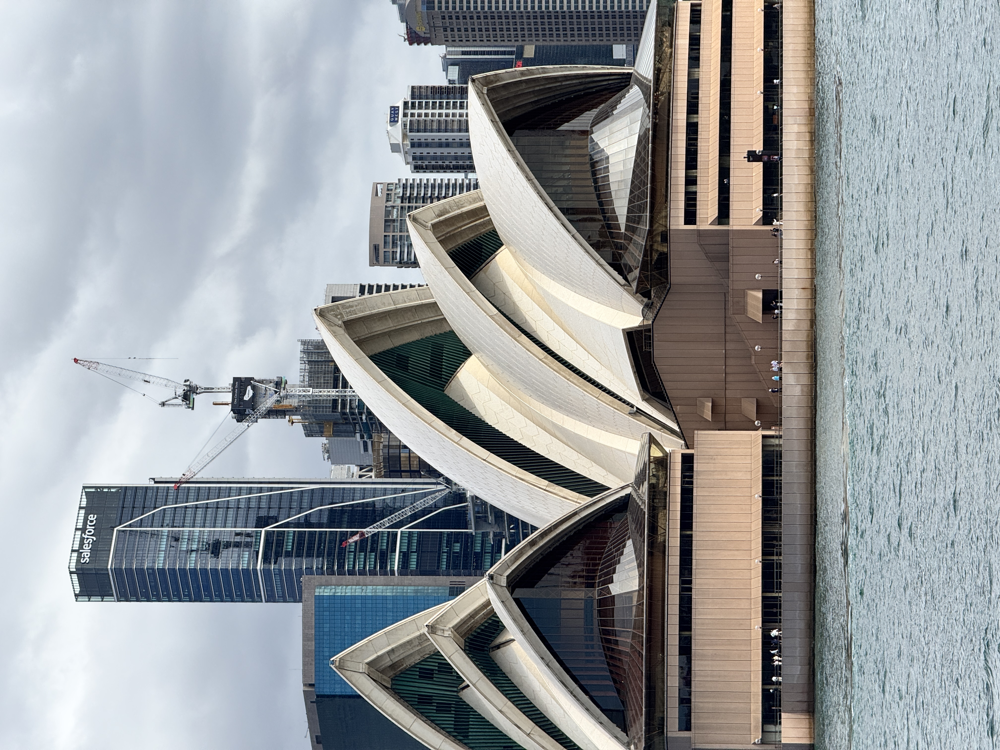
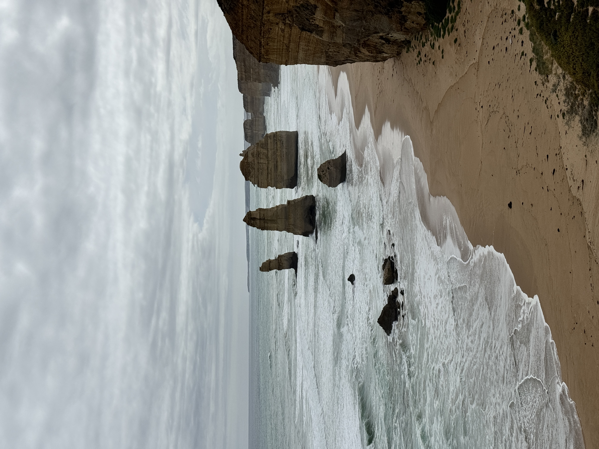

Australia · March · 15 Days
Australia is a long way to go. That is the first thing to reckon with — the flight from India is eleven and a half hours, you cross multiple time zones, and by the time you land you have been awake for what feels like a small eternity. And then you step outside and the light hits you, that particular southern hemisphere brightness that is sharper than anywhere else we have been, and the distance stops mattering immediately.
We went in March — late summer in the southern hemisphere. Warm without being punishing, the tourist peak just thinning out, the evenings long and golden. Fifteen days across Sydney, Melbourne, the Great Ocean Road, and Philip Island. It was not enough — but more on that later.
Four days in Sydney and every single one felt necessary. The city is arranged around its harbour in a way that makes orientation easy and exploration endlessly rewarding — wherever you walk, the water is never far.

The Opera House from outside is the photograph everyone takes. The Opera House from inside — we did a morning tour — is something else entirely. The tiled ceilings, the curved timber walls, the acoustic engineering made visible in the form of the building. Go inside.
The Bondi to Coogee coastal walk is three and a half kilometres of clifftop path between two beaches, the Pacific crashing below and the Australian sky above. Do it mid-morning, end at Icebergs — the pool hanging over the ocean, lunch with a view — and you will understand why Sydneysiders move the way they do through the world.

We also visited the Sydney Cricket Ground — a must for any cricket-mad traveller from India. Finding the Brian Lara–Sachin Tendulkar Gates at the SCG was a genuinely moving moment. The plaque records that Tendulkar scored three centuries in five Tests here and averaged 157, calling it his favourite cricket ground outside India. Standing at the gate where Sachin walked out — there are worse places to spend a morning.

Lunch at Aalia near the CBD for modern Middle Eastern at a high level. Cafe Sydney or Aria for harbour views with real substance. Fish at the Rocks for straightforward excellent seafood. Coffee from Single O — Sydney takes coffee seriously and this is the best entry point.
The Melbourne-Sydney rivalry is something both cities take seriously. Having spent real time in both: Sydney has the harbour, Melbourne has everything else. The food is better, the coffee is better, the arts scene is more alive, the neighbourhoods are more interesting. But the thing that separates Melbourne from every other city we have visited anywhere is sport. It is the sporting capital of Australia, possibly of the southern hemisphere, and the infrastructure to prove it is extraordinary.
We did the trifecta. The MCG (Melbourne Cricket Ground) — a stadium tour of the 100,000-seat ground, standing on the outfield and feeling appropriately small. Rod Laver Arena, home of the Australian Open — walking the blue courts where the Grand Slam is decided every January. And Albert Park, where the Formula 1 Australian Grand Prix is held each year — a street circuit carved around a lake in the middle of the city. Three iconic venues, three sports, one city. It is a remarkable concentration of sporting heritage.


We left Melbourne early and drove southwest toward the coast. One practical note for Indian travellers: Australia drives on the left, with the steering wheel on the right — exactly like India. If you are comfortable driving at home, renting a car here is completely intuitive. No adjustment required, which made the whole road trip considerably more relaxed.


The Great Ocean Road begins at Torquay and runs for 240 kilometres along cliff edges, through rainforest, past surf beaches and fishing villages. We took two days, staying overnight in Apollo Bay — a small fishing town that has not yet been discovered by the right Instagram accounts, which is entirely its charm. We ate well, walked the beach at low tide, and woke early for the drive to the Apostles.

The Cape Otway Lighthouse — the oldest surviving lighthouse on mainland Australia, built in 1848 — sits at the point where the Southern Ocean and Bass Strait meet. The view from the clifftop, with the ocean stretching south all the way to Antarctica, has a particular kind of vastness to it.

"The Twelve Apostles: limestone stacks rising from the Southern Ocean, the waves breaking at their base, the scale of it making you feel appropriately small. There were originally nine — not twelve — but the name stuck and the drama is real regardless."
We did a full-day trip to Philip Island, about 90 minutes from Melbourne — and it was one of the best days of the trip. The island is home to the world's largest Little Penguin colony, and every evening at sunset, hundreds of penguins emerge from the surf and waddle up the beach to their burrows. No torches, no flash photography — just the penguins going about their evening routine in the near-dark.

The island also has a wildlife park where you can walk among kangaroos — they are entirely unbothered by visitors and will eat from your hand if you are patient. We spent an hour there before the penguin parade and it was the children's favourite part of the trip, even without children. The combination of kangaroos in the afternoon and penguins at dusk makes Philip Island a genuinely remarkable single day out.
Australia is not a country you can tick off. It is a continent, and in fifteen days we covered a small speck of it — the southeastern corner alone. We did not see the Great Barrier Reef, or Uluru, or the Kimberley, or the Gold Coast, or Tasmania, or Western Australia. Each of those is a trip in itself. Australia is going to need a return visit — probably more than one. We are already planning the next one around the reef and the north. The southeastern corner, at least, we can now say we know a little.
March is late summer in Australia — Sydney and Melbourne sit around 22–28°C during the day, warm and mostly sunny. Light summer clothes work well, with a layer for Melbourne evenings which can turn cooler than expected. The Great Ocean Road is frequently windy on the clifftops even on a warm day, so keep a light jacket in the car. Philip Island in the evening gets cold — bring something warm for the penguin parade. Good walking shoes throughout.
Planning an Australia trip? Our 15-day route — Sydney, Melbourne, Great Ocean Road, Philip Island — is on the site.
Message us on WhatsApp